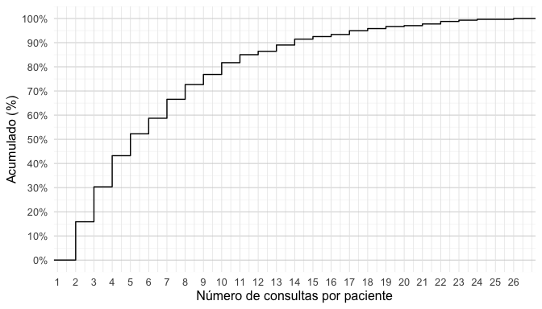
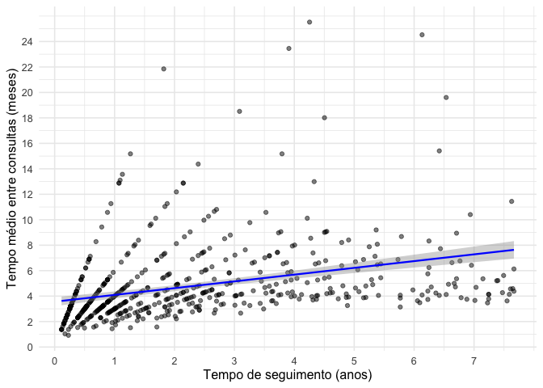

ODIS Retrospectivo Data Analysis
Análise dos dados dos pacientes com obesidade
Consultas
Rows: 17 Columns: 4
── Column specification ────────────────────────────────────────────────────────
Delimiter: ","
chr (4): variable, type, levels, description
ℹ Use `spec()` to retrieve the full column specification for this data.
ℹ Specify the column types or set `show_col_types = FALSE` to quiet this message.O banco de dados consultas reúne 5.202 observações referentes a consultas médicas de 872 pacientes distintos, identificados de forma única pela variável record_id. O conjunto contém 17 variáveis, abrangendo informações sociodemográficas, datas de atendimento, medidas antropométricas e indicadores derivados do seguimento longitudinal. As variáveis incluem dados fixos, como birthdate (data de nascimento), sex e race, além de variáveis temporais (date_consultation, date_weight, baseline_date) que permitem acompanhar a evolução clínica ao longo do tempo. Foram incorporadas medidas diretas, como weight_kg e height_m, e variáveis calculadas, como o índice de massa corporal (bmi) e a perda percentual de peso em relação ao valor basal (percent_weight_loss).
O dataset apresenta algumas particularidades em termos de completude: enquanto variáveis como age, sex e race estão completas para todos os registros, há proporções relevantes de dados faltantes em weight_kg (cerca de 20%) e, consequentemente, em variáveis derivadas como bmi e percent_weight_loss. A variável height_m, definida pela mediana das medidas disponíveis por paciente ou complementada via prontuário, apresenta taxa de preenchimento próxima de 100%. As medidas temporais mostram amplitude de acompanhamento de janeiro de 2016 a outubro de 2023, com variação importante no número de consultas por paciente (mediana de 4 consultas, podendo chegar a mais de 30).
Em síntese, consultas constitui uma base de dados longitudinal, estruturada de modo que cada linha representa uma consulta de um paciente em determinada data, trazendo consigo tanto informações fixas (características do indivíduo) quanto variáveis dinâmicas (peso, IMC, perda relativa de peso), permitindo análises temporais da trajetória clínica dos indivíduos.
Filtrando a amostra
Por IMC
Esse código cria um novo dataframe chamado consultas_bmi a partir do dataframe consultas, selecionando apenas os pacientes que em algum momento do seguimento apresentaram IMC ≥ 30 kg/m² (critério de obesidade).
Depois de aplicar o filtro, o dataframe consultas (5.202 consultas, 872 pacientes) passou a conter apenas os pacientes que apresentaram IMC ≥ 30 em pelo menos uma consulta, resultando no novo dataframe obese. O dataframe obese mantém a mesma estrutura de variáveis (17 colunas), mas contém menos pacientes (695) e menos consultas (4.102), restrito àqueles que tiveram obesidade (IMC ≥ 30) em pelo menos uma avaliação. Esse subconjunto apresenta peso e IMC médios mais altos, idade média ligeiramente menor e preserva as distribuições de sexo, raça e período de acompanhamento do banco original.
O que mudou em relação ao original:
- O número de pacientes reduziu de 872 para 695, com exclusão de 177 (20,3%) pacientes que nunca tiveram IMC ≥ 30.
- O número de consultas reduziu de 5.202 para 4.102, com exclusão de 1100 (21,2%) consultas de pacientes que nunca tiveram IMC ≥ 30.
- Distribuição etária: a média de idade diminuiu de ~47,3 anos para ~45,7 anos, indicando que a subamostra de obesos é um pouco mais jovem.
- Sexo: mantém-se a predominância feminina [F: 2.627 (60.2%) vs. M: 1.475 (64%)], com leve aumento proporcional de mulheres.
- Raça: permanece similar, mas com leve redução proporcional dos registros classificados como “VERIFICAR”.
- Peso médio subiu de ~117 kg para ~130 kg.
- IMC médio subiu de ~42,9 para ~47,5, com valores mínimos de 19,8 (pois algumas consultas de obesos podem ter IMC < 30, mas o paciente já foi obeso em outra consulta).
- Altura média manteve-se estável (1,64 m → 1,65 m).
- Perda percentual de peso (percent_weight_loss): distribuição semelhante, mas agora restrita ao grupo com obesidade em algum momento.
- Datas: período de acompanhamento se mantém (2016–2023), apenas com redução no número de observações.
| Característica | consultas (original) | novo (IMC ≥ 30 em ≥1 consulta) |
|---|---|---|
| Nº de pacientes | 872 | 695 (79.7%) / perda de 20.3% |
| Nº de consultas | 5.202 | 4.102 |
| Idade média (anos) | 47,3 | 45,7 |
| Peso médio (kg) | 117 | 130 |
| IMC médio (kg/m²) | 42,9 | 47,5 |
| Altura média (m) | 1,64 | 1,65 |
| % de mulheres | 60,2% (3.133/5.202) | 64,0% (2.627/4.102) |
| Período das consultas | 2016–2023 | 2016–2023 |
Por idade
Interseção (eval=false)
Nesta primeira opção, os pacientes que foram atendidos enquanto ainda eram menores de idade (idade < 18 anos) e que também tiveram consultas na vida adulta (idade ≥ 18 anos) são mantidos. O código a seguir filtra os pacientes obesos, mantendo apenas aqueles que tiveram pelo menos uma consulta na vida adulta, e exclui os que foram atendidos exclusivamente antes dos 18 anos.
Primeira opção (obese_intersect): inclui todos os pacientes com pelo menos uma consulta ≥ 18 anos (mesmo que tenham histórico antes dos 18).
consultas_underage <- consultas_bmi %>%
arrange(desc(age)
) %>%
filter(age < 18
) %>%
distinct(record_id, .keep_all = TRUE)
# Ordena o dataframe obese por idade decrescente (arrange(desc(age))).
# Filtra apenas registros de pacientes com idade < 18 anos.
# Usa distinct(record_id, .keep_all = TRUE) → mantém apenas uma linha por paciente.
# Como está ordenado em ordem decrescente de idade, fica registrada a maior idade do paciente enquanto menor de idade.
# Resultado: cada paciente aparece uma única vez, representando sua consulta mais velha antes dos 18 anos.
consultas_adults <- consultas_bmi %>%
arrange(desc(age)
) %>%
filter(age >= 18
) %>%
distinct(record_id, .keep_all = TRUE)
# Mesmo processo, mas agora para pacientes com idade ≥ 18 anos.
# Resultado: cada paciente aparece uma vez, representando sua consulta mais velha em idade adulta.
consultas_adults_records <- consultas_adults %>% pull(record_id)
# Cria um vetor (character) contendo os IDs (record_id) de todos os pacientes que têm pelo menos uma consulta na idade adulta.
common_record_ids <- intersect(consultas_underage$record_id, consultas_adults$record_id)
# Identifica os pacientes que aparecem nos dois grupos (ou seja, têm registro tanto antes quanto depois dos 18 anos).
# intersect() retorna o conjunto de record_id comum aos dois dataframes.
obese_intersect <- consultas_bmi %>%
filter(
record_id %in% consultas_adults_records
)O código divide os pacientes obesos em dois subconjuntos: aqueles que tiveram consultas ainda menores de 18 anos e aqueles que já tiveram consultas na vida adulta. Para cada paciente, mantém apenas uma linha representando a consulta de maior idade em cada fase. Além disso, identifica o subconjunto de pacientes que estavam presentes em ambas as fases de acompanhamento, ou seja, que iniciaram o seguimento quando menores de idade e continuaram após atingir a maioridade. Com base nisso, o passo final cria o dataframe obese que contém apenas pacientes com ao menos uma consulta na vida adulta (filtra-se consultas_bmi mantendo os registros cujo record_id aparece em consultas_adults_records). Assim, todos os indivíduos acompanhados exclusivamente antes dos 18 anos são excluídos do conjunto principal, enquanto os que atingiram a maioridade permanecem para as análises. O vetor common_record_ids continua disponível caso seja necessário isolar, em análises específicas, o subgrupo que transitou de menor para adulto (isto é, pacientes com histórico em ambas as fases).
Um total de 11 pacientes foram atendidos na clínica enquanto ainda eram menores de idade, correspondendo a 140 consultas médicas. Destes, 4 continuaram o acompanhamento após atingirem a maioridade, restando apenas 7 pacientes que não completaram a maioridade durante o período de acompanhamento.
obese_intersect é o dataset de consultas contendo os registros dos pacientes maiores de idade que tiveram pelo menos um IMC > 30 e acompanhados durante o período de interesse, com um total de 4062 consultas médicas.
Exclusão de pacientes menores de idade
Segunda opção (obese_adults_only): inclui apenas pacientes que entraram no acompanhamento já adultos, eliminando qualquer paciente que teve consulta como menor de idade.
# 1. Identifica todos os pacientes que tiveram consultas < 18 anos
underage_records <- consultas_bmi %>%
filter(age < 18) %>%
pull(record_id) %>%
unique()
# 2. Cria o dataset 'obese' apenas com consultas de pacientes adultos
# que nunca tiveram consulta como menores de idade
consultas_adults <- consultas_bmi %>%
filter(
age >= 18, # garante só idade adulta
!(record_id %in% underage_records)) # exclui quem já foi <18O código acima cria um novo dataframe chamado consultas_adults, que contém apenas os pacientes que foram atendidos exclusivamente na vida adulta (idade ≥ 18 anos). Pacientes que tiveram consultas enquanto menores de idade são completamente excluídos do conjunto.
O que mudou em
consultas_adultsem relação aconsultas_bmi:
Comparativo objetivo do que mudou ao excluir qualquer paciente que já teve consulta < 18 anos (passando de consultas_bmi → consultas_adults):
- Número de
consultas: linhas caíram de 4.102 para 4.039 (n=63; redução de −1,5%). Pacientesúnicos: de 695 para 684 (n=11; redução de −1,6%).Idade: mínimo subiu de 5,68 para 18,0 anos (como esperado); média levemente maior (45,7 → 46,2).Sexo: % de mulheres praticamente estável (64,0% → 64,4%; 2.627/4.102 vs. 2.600/4.039).Antropometria: médias muito semelhantes (peso ~130 kg; IMC 47,5 → 47,6); leve redução no desvio-padrão do peso (38,3 → 37,9).- Completude: pequenos ganhos — faltantes em weight_kg e bmi caem de 790 para 784; percent_weight_loss de 1.384 para 1.369.
- Período de consultas permanece 2016–2023.
Pipe table:
| Métrica | Antes: consultas_bmi | Depois: consultas_adults |
|---|---|---|
| Linhas (consultas) | 4.102 | 4.039 |
| Pacientes únicos (record_id) | 695 | 684 |
| Idade média (anos) | 45,7 | 46,2 |
| Idade mínima (anos) | 5,68 | 18,0 |
| Mulheres, n (%) | 2.627 (64,0%) | 2.600 (64,4%) |
| Peso médio (kg) | 130 | 130 |
| IMC médio (kg/m²) | 47,5 | 47,6 |
| weight_kg faltante (n) | 790 | 784 |
| bmi faltante (n) | 790 | 784 |
| percent_weight_loss faltante | 1.384 | 1.369 |
Interpretação: a exclusão dos pacientes com histórico de consultas na menoridade produz um conjunto estritamente adulto, com mudanças mínimas nas estatísticas descritivas e pequena redução do número de registros e pacientes. Isso sugere que a fração de indivíduos com histórico <18 anos era relativamente pequena e não distorcia substancialmente as médias antropométricas do grupo.
≥ 2 consultas
consultas_2_visits <- consultas_adults %>%
group_by(record_id) %>%
filter(n() >= 2) %>%
ungroup()
# agrupando os dados por `record_id` (identificador único do paciente) e mantendo apenas aqueles grupos (pacientes) que possuem duas ou mais observações (consultas). O resultado é um conjunto de dados que exclui pacientes com apenas uma consulta.Esse código cria um novo dataframe chamado consultas_2_visits, que contém apenas os pacientes que tiveram pelo menos duas consultas médicas registradas.
O que mudou em
consultas_2_visitsem relação aconsultas_adults:
Comparativo objetivo do que mudou ao exigir ≥2 consultas por paciente (passando de consultas_adults para consultas_2_visits):
- Número de consultas: linhas caíram de 4.039 para 3.929 (n=110; redução de −2,7%).
- Pacientes únicos: de 684 para 574 (n=110; redução de −16,1%), correspondendo justamente aos que tinham apenas uma consulta.
- Idade: média praticamente inalterada (46,2 → 46,3 anos); mínima continua em 18 anos.
- Sexo: % de mulheres estável (64,4% → 64,3%; 2.600/4.039 vs. 2.523/3.929).
- Antropometria: valores médios quase idênticos (peso ~130 kg; IMC 47,6 → 47,6).
- Completude: leve melhora na proporção de dados completos, já que pacientes de consulta única (com mais risco de faltar medidas) foram removidos — ex:
percent_weight_lossfaltante reduziu de 1.369 para 1.259 (N=110).
Pipe table
| Métrica | Antes: consultas_adults | Depois: consultas_2_visits |
|---|---|---|
| Linhas (consultas) | 4.039 | 3.929 |
| Pacientes únicos (record_id) | 684 | 574 |
| Idade média (anos) | 46,2 | 46,3 |
| Idade mínima (anos) | 18,0 | 18,0 |
| Mulheres, n (%) | 2.600 (64,4%) | 2.523 (64,3%) |
| Peso médio (kg) | 130 | 130 |
| IMC médio (kg/m²) | 47,6 | 47,6 |
| weight_kg faltante (n) | 784 | 784 |
| bmi faltante (n) | 784 | 784 |
| percent_weight_loss faltante | 1.369 | 1.259 |
Interpretação: ao excluir pacientes com apenas uma consulta, reduz-se de forma significativa o número de indivíduos (−16%), mas mantém-se praticamente inalterado o perfil clínico (idade, sexo, peso e IMC médios). O conjunto resultante é mais adequado para análises longitudinais de evolução, pois garante acompanhamento mínimo de duas consultas por paciente.
Objetivos
Objetivo Geral
Analisar as medidas de frequência, tendência central e dispersão associadas ao tratamento da obesidade, visando identificar variáveis clínicas e epidemiológicas associadas a melhor resposta ao tratamento clínico da obesidade.
Componente descritivo
1.1. * Perfil epidemiológico na primeira consulta: idade, sexo, etnia, IMC, comorbidades.
1.2. Incidência de doenças cardiovasculares, osteometabólicas, anemias e deficiências vitamínicas.
1.3. * Indicadores de atendimento: número de consultas e tempo de seguimento.
1.4. Tipos de tratamentos prescritos para obesidade e dislipidemia e sua frequência.
1.5. Causa dos 95 óbitos.
1.6. * Proporção de indivíduos com peso final maior que o inicial.
1.7. * Proporção de consultas (a partir da segunda) com ganho ou perda de peso em relação à anterior.Análises pelo tempo de seguimento
2.1. * Comparar a porcentagem máxima de perda de peso entre seguimento ≤12 meses e >12 meses, ajustando por sexo, etnia, idade, IMC inicial, comorbidades e uso de medicação.
2.2. * Avaliar associação da perda de peso máxima com variáveis demográficas, clínicas e de seguimento.
2.3. * Descrever o momento em que cada indivíduo atingiu ≥5% de perda em relação ao peso inicial.Subgrupos com perda ≥5%
3.1. * Identificar o tempo e a consulta da primeira observação de perda ≥5%.
3.2. * Medidas de frequência de reganho de peso após a perda ≥5%.
3.3. * Comparar a perda máxima entre subgrupos (≤6 meses, 6–12 meses, >12 meses).Grupo sem perda ≥5%
4.1. * Identificar tempo de seguimento e consulta com maior perda observada.
4.2. * Descrever o ganho de peso após esse momento.Protocolos e padronização
5.1. Elaborar protocolo de atendimento com critérios de inclusão, rastreio, seguimento, tratamento e alta.
5.2. Desenvolver ficha médica padronizada para implementação do protocolo.
Escolha do dataset
Escolha o dataset desejado para as análises subsequentes
obese <- consultas_2_visitsrm(
consultas,
consultas_bmi,
obese_intersect,
consultas_adults,
consultas_2_visits,
consultas_underage,
consultas_adults_records,
common_record_ids,
underage_records)1. Componente descritivo
1.1. Perfil epidemiológico na primeira consulta: idade, sexo, etnia, IMC, comorbidades.
# 1) Primeira consulta por paciente
baseline <- obese %>%
group_by(record_id) %>%
arrange(date_consultation, .by_group = TRUE) %>%
slice(1) %>%
ungroup()
# 2) Funções auxiliares ----------------------------------------------------
# 2.1) Estatísticas com IC95% (t de Student) + min/max, ignorando NAs
ic95_stats <- function(x) {
x <- x[!is.na(x)]
n <- length(x)
if (n == 0) {
return(c(media = NA_real_, li = NA_real_, ls = NA_real_, min = NA_real_, max = NA_real_))
}
m <- mean(x)
s <- sd(x)
se <- s / sqrt(n)
tcrit <- if (n > 1) qt(0.975, df = n - 1) else NA_real_
li <- if (!is.na(tcrit)) m - tcrit * se else NA_real_
ls <- if (!is.na(tcrit)) m + tcrit * se else NA_real_
c(media = m, li = li, ls = ls, min = min(x), max = max(x))
}
# 2.2) Resumo de completude (N missings e %)
na_profile <- function(v) {
n_total <- length(v)
n_na <- sum(is.na(v))
pct_na <- if (n_total > 0) 100 * n_na / n_total else NA_real_
c(n_total = n_total, n_na = n_na, pct_na = pct_na)
}
# 3) Resumos NUMÉRICOS -----------------------------------------------------
# 3.1) Estatísticas com IC95% para variáveis contínuas
idade_stats <- ic95_stats(baseline$age)
peso_stats <- ic95_stats(baseline$weight_kg)
altura_stats <- ic95_stats(baseline$height_m)
imc_stats <- ic95_stats(baseline$bmi)
# 3.2) Completude para variáveis contínuas
idade_na <- na_profile(baseline$age)
peso_na <- na_profile(baseline$weight_kg)
altura_na <- na_profile(baseline$height_m)
imc_na <- na_profile(baseline$bmi)
# 4) Resumos CATEGÓRICOS ---------------------------------------------------
# Para sex e race, proporções calculadas sobre N não-missing,
# mas também exibimos N e % de NAs
# 4.1) Sexo
sexo_baseline <- baseline %>%
count(sex, name = "n") %>%
mutate(prop = 100 * n / sum(n, na.rm = TRUE))
sexo_na <- na_profile(baseline$sex)
# 4.2) Etnia
etnia_baseline <- baseline %>%
count(race, name = "n") %>%
mutate(prop = 100 * n / sum(n, na.rm = TRUE))
etnia_na <- na_profile(baseline$race)
# 5) Tibbles consolidados ---------------------------------------------------
# 5.1) Perfil numérico (uma linha por variável, com média, IC95, min, max, NAs)
perfil_numerico <- tibble::tibble(
Variavel = c("Idade (anos)", "Peso (kg)", "Altura (m)", "IMC (kg/m²)"),
Media = c(idade_stats["media"], peso_stats["media"], altura_stats["media"], imc_stats["media"]),
IC95_inf = c(idade_stats["li"], peso_stats["li"], altura_stats["li"], imc_stats["li"]),
IC95_sup = c(idade_stats["ls"], peso_stats["ls"], altura_stats["ls"], imc_stats["ls"]),
Minimo = c(idade_stats["min"], peso_stats["min"], altura_stats["min"], imc_stats["min"]),
Maximo = c(idade_stats["max"], peso_stats["max"], altura_stats["max"], imc_stats["max"]),
N_total = c(idade_na["n_total"], peso_na["n_total"], altura_na["n_total"], imc_na["n_total"]),
N_NA = c(idade_na["n_na"], peso_na["n_na"], altura_na["n_na"], imc_na["n_na"]),
Perc_NA = c(idade_na["pct_na"], peso_na["pct_na"], altura_na["pct_na"], imc_na["pct_na"])
)
# 5.2) Perfil categórico (uma linha por categoria + linha de NAs)
sexo_tbl <- sexo_baseline %>%
mutate(Variavel = "Sexo",
Categoria = as.character(sex)) %>%
select(Variavel, Categoria, n, prop)
sexo_tbl_na <- tibble::tibble(
Variavel = "Sexo",
Categoria = "NA",
n = sexo_na["n_na"],
prop = 100 * as.numeric(sexo_na["n_na"]) / as.numeric(sexo_na["n_total"])
)
etnia_tbl <- etnia_baseline %>%
mutate(Variavel = "Etnia",
Categoria = as.character(race)) %>%
select(Variavel, Categoria, n, prop)
etnia_tbl_na <- tibble::tibble(
Variavel = "Etnia",
Categoria = "NA",
n = etnia_na["n_na"],
prop = 100 * as.numeric(etnia_na["n_na"]) / as.numeric(etnia_na["n_total"])
)
perfil_categorico <- bind_rows(
sexo_tbl, sexo_tbl_na,
etnia_tbl, etnia_tbl_na
)
# 6) N total de pacientes
n_total_pacientes <- dplyr::n_distinct(baseline$record_id)# Função para formatar com decimais definidos
fmt <- function(x, dec) {
ifelse(is.na(x), "",
format(round(as.numeric(x), dec),
big.mark = ".", decimal.mark = ",", trim = TRUE))
}
# Definir número de casas decimais por variável
dec_map <- c("Idade (anos)" = 0,
"Peso (kg)" = 1,
"Altura (m)" = 1,
"IMC (kg/m²)" = 1)
# Aplicar formatação na tabela numérica
perfil_numerico_fmt <- perfil_numerico %>%
rowwise() %>%
mutate(
d = dec_map[Variavel],
Media = fmt(Media, d),
IC95_inf = fmt(IC95_inf, d),
IC95_sup = fmt(IC95_sup, d),
Minimo = fmt(Minimo, d),
Maximo = fmt(Maximo, d),
Perc_NA = paste0(fmt(Perc_NA, 1), "%")
) %>%
ungroup() %>%
select(-d)
# Renderizar tabela final
knitr::kable(
perfil_numerico_fmt,
col.names = c("Variável","Média","IC95% Inferior","IC95% Superior","Mínimo","Máximo","N total","N (NA)","% (NA)"),
align = c("l","c","c","c","c","c","c","c","c")
)| Variável | Média | IC95% Inferior | IC95% Superior | Mínimo | Máximo | N total | N (NA) | % (NA) |
|---|---|---|---|---|---|---|---|---|
| Idade (anos) | 44 | 43 | 45 | 18 | 84 | 574 | 0 | 0% |
| Peso (kg) | 133,8 | 130,4 | 137,2 | 59,7 | 268,7 | 574 | 99 | 17,2% |
| Altura (m) | 1,6 | 1,6 | 1,7 | 1,1 | 1,9 | 574 | 0 | 0% |
| IMC (kg/m²) | 48,9 | 47,8 | 50 | 26,9 | 91,5 | 574 | 99 | 17,2% |
# Função de formatação
fmt_num <- function(x, dec) format(round(x, dec), big.mark = ".", decimal.mark = ",", trim = TRUE)
# Aplicar formatação
perfil_categorico_fmt <- perfil_categorico %>%
mutate(
n = fmt_num(n, 0), # N total sem casas decimais
prop = fmt_num(prop, 1) # Proporção (%) com 1 casa decimal
)
# Renderizar tabela
knitr::kable(
perfil_categorico_fmt,
col.names = c("Variável", "Categoria", "N total", "Proporção (%)"),
align = c("l", "l", "c", "c"),
caption = "Perfil categórico: sexo e etnia na primeira consulta"
)| Variável | Categoria | N total | Proporção (%) |
|---|---|---|---|
| Sexo | F | 375 | 65,3 |
| Sexo | M | 199 | 34,7 |
| Sexo | NA | 0 | 0,0 |
| Etnia | Branco | 428 | 74,6 |
| Etnia | Mulato (Pardo) | 95 | 16,6 |
| Etnia | Preto | 48 | 8,4 |
| Etnia | VERIFICAR | 3 | 0,5 |
| Etnia | NA | 0 | 0,0 |
Foram incluídos 574 pacientes na linha de base.
A idade média foi de 44 anos (IC95%: 43–45), variando entre 18 e 84 anos.
O peso médio foi de 133,8 kg (IC95%: 130,4–137,2), com mínimo de 59,7 kg e máximo de 268,7 kg.
A altura média foi de 1,65 m (IC95%: 1,64–1,66), variando de 1,15 m a 1,91 m.
O IMC médio foi de 48,9 kg/m² (IC95%: 47,8–50,0), com valores mínimos e máximos de 26,9 kg/m² e 91,5 kg/m², respectivamente.
Quanto à completude dos dados, não houve valores ausentes para idade e altura. Já para peso e IMC observaram-se 99 casos faltantes (17,2%).
Na distribuição por sexo, 375 pacientes (65,3%) eram mulheres e 199 (34,7%) homens, sem dados ausentes.
Em relação à etnia, predominou a categoria Branco (n=428; 74,6%), seguida de Mulato/Pardo (n=95; 16,6%), Preto (n=48; 8,4%) e casos classificados como “VERIFICAR” (n=3; 0,5%). Não houve valores ausentes registrados.
Resumo interpretativo: A população atendida na primeira consulta caracteriza-se por indivíduos de meia-idade, com predomínio do sexo feminino, obesidade grave (IMC médio ≈49 kg/m²) e predominância de pacientes brancos. A completude foi satisfatória, com ausência de dados apenas para peso e IMC em cerca de 17% dos casos.
Resultados: Na primeira consulta foram avaliados 574 pacientes, com idade média de 44 anos (IC95%: 43–45), variando entre 18 e 84 anos. O peso médio foi de 133,8 kg (IC95%: 130,4–137,2) e a altura média de 1,65 m (IC95%: 1,64–1,66), resultando em um IMC médio de 48,9 kg/m² (IC95%: 47,8–50,0). Os valores mínimos e máximos observados foram, respectivamente, 59,7 e 268,7 kg para peso; 1,15 e 1,91 m para altura; e 26,9 e 91,5 kg/m² para IMC. Houve ausência de dados em 17,2% das observações de peso e IMC. A maioria dos pacientes era do sexo feminino (65,3%), enquanto 34,7% eram do sexo masculino. Quanto à etnia, predominou a categoria branca (74,6%), seguida de parda (16,6%), preta (8,4%) e casos classificados como “verificar” (0,5%).
# Remover apenas objetos intermediários criados durante a análise do item 1.1
# Mantendo as funções auxiliares (ic95_stats, na_profile, fmt, fmt_num)
rm(
baseline,
idade_stats, peso_stats, altura_stats, imc_stats,
idade_na, peso_na, altura_na, imc_na,
sexo_baseline, sexo_na,
etnia_baseline, etnia_na,
sexo_tbl, sexo_tbl_na,
etnia_tbl, etnia_tbl_na,
perfil_numerico,
#perfil_numerico_fmt,
perfil_categorico,
#perfil_categorico_fmt,
n_total_pacientes,
dec_map
)1.3. Indicadores de atendimento: número de consultas e tempo de seguimento.
# calcular número de consultas, tempo de seguimento e tempo médio entre consultas
indicadores_atendimento <- obese %>%
group_by(record_id) %>%
summarise(
n_consultas = n(), # número de consultas por paciente
# tempo total de seguimento entre a 1ª e a última consulta
tempo_seguimento_dias = as.numeric(max(date_consultation, na.rm = TRUE) -
min(date_consultation, na.rm = TRUE)),
tempo_seguimento_semanas = tempo_seguimento_dias / 7,
tempo_seguimento_meses = tempo_seguimento_dias / 30.44,
tempo_seguimento_anos = tempo_seguimento_dias / 365.25,
# tempo médio entre consultas (média dos intervalos entre visitas consecutivas)
tempo_medio_entre_consultas_dias = dplyr::if_else(
n_consultas > 1,
tempo_seguimento_dias / (n_consultas - 1),
as.numeric(NA)
),
# conversões auxiliares
tempo_medio_entre_consultas_semanas = tempo_medio_entre_consultas_dias / 7,
tempo_medio_entre_consultas_meses = tempo_medio_entre_consultas_dias / 30.44,
tempo_medio_entre_consultas_anos = tempo_medio_entre_consultas_dias / 365.25,
.groups = "drop"
)Esse código cria o dataframe indicadores_atendimento, que contém para cada paciente o número de consultas e o tempo de seguimento em dias, semanas, meses e anos (diferença entre a primeira e a última consulta). Contém ainda o tempo médio entre consultas (tempo_medio_entre_consultas_*), calculado como o tempo total entre a primeira e a última consulta dividido pelo número de intervalos (n_consultas - 1). Para pacientes com apenas uma consulta, o valor é NA.
# Medidas solicitadas: mediana, p5, p25, p75, p95, máximo
sumario_n_consultas <- indicadores_atendimento %>%
summarise(
p5 = quantile(n_consultas, probs = 0.05, na.rm = TRUE, type = 7),
p25 = quantile(n_consultas, probs = 0.25, na.rm = TRUE, type = 7),
mediana = quantile(n_consultas, probs = 0.50, na.rm = TRUE, type = 7),
p75 = quantile(n_consultas, probs = 0.75, na.rm = TRUE, type = 7),
p95 = quantile(n_consultas, probs = 0.95, na.rm = TRUE, type = 7),
max = max(n_consultas, na.rm = TRUE)
) %>%
pivot_longer(everything(), names_to = "medida", values_to = "valor") %>%
mutate(valor_fmt = fmt(valor, dec = 0)) %>%
select(medida, valor = valor_fmt)
kable(sumario_n_consultas,
caption = "Número de consultas por paciente — mediana, percentis (5, 25, 75, 95) e máximo")| medida | valor |
|---|---|
| p5 | 2 |
| p25 | 3 |
| mediana | 5 |
| p75 | 9 |
| p95 | 17 |
| max | 26 |
# Distribuição de frequências (absoluta e relativa)
tabela_frequencias <- indicadores_atendimento %>%
count(n_consultas, name = "freq") %>%
mutate(
pct = 100 * freq / sum(freq),
freq_fmt = fmt(freq, dec = 0),
pct_fmt = paste0(fmt(pct, dec = 2), "%")
) %>%
select(`n_consultas` = n_consultas,
`frequência` = freq_fmt,
`%` = pct_fmt)
kable(tabela_frequencias,
caption = "Distribuição do número de consultas por paciente (frequência e porcentagem)",
align = c("c", "c", "c")
)| n_consultas | frequência | % |
|---|---|---|
| 2 | 91 | 15,85% |
| 3 | 83 | 14,46% |
| 4 | 74 | 12,89% |
| 5 | 52 | 9,06% |
| 6 | 37 | 6,45% |
| 7 | 45 | 7,84% |
| 8 | 35 | 6,10% |
| 9 | 24 | 4,18% |
| 10 | 28 | 4,88% |
| 11 | 19 | 3,31% |
| 12 | 8 | 1,39% |
| 13 | 15 | 2,61% |
| 14 | 14 | 2,44% |
| 15 | 6 | 1,05% |
| 16 | 5 | 0,87% |
| 17 | 9 | 1,57% |
| 18 | 5 | 0,87% |
| 19 | 5 | 0,87% |
| 20 | 2 | 0,35% |
| 21 | 4 | 0,70% |
| 22 | 6 | 1,05% |
| 23 | 3 | 0,52% |
| 24 | 2 | 0,35% |
| 26 | 2 | 0,35% |
Resultado: O número de consultas por paciente apresentou ampla variação, oscilando entre 2 e 26 atendimentos durante o período de seguimento. A distribuição mostrou-se assimétrica à direita, com maior concentração nas faixas iniciais: 25% dos pacientes realizaram até 3 consultas, enquanto a mediana foi de 5 consultas e 75% tiveram até 9 consultas. Apenas 5% ultrapassaram 17 atendimentos, caracterizando um grupo minoritário submetido a acompanhamento mais frequente. A tabela de frequências indica que a distribuição é assimétrica à direita: a maioria concentrou-se entre 2 e 9 consultas (cerca de 75% do total), enquanto poucos pacientes atingiram números elevados de atendimentos (acima de 20 consultas, menos de 3%). O gráfico de distribuição acumulada (ECDF) ilustra de forma clara essa tendência, evidenciando que metade dos pacientes foi acompanhada com até cinco consultas e que a curva se estabiliza progressivamente a partir de 10 atendimentos, indicando que casos de seguimento prolongado foram menos comuns.
ggplot(indicadores_atendimento, aes(x = n_consultas)) +
stat_ecdf(geom = "step") +
scale_x_continuous(
breaks = seq(0, max(indicadores_atendimento$n_consultas), by = 1) # ticks a cada 1
) +
scale_y_continuous(
breaks = seq(0, 1, by = 0.1), # ticks a cada 10%
labels = scales::percent_format(accuracy = 1)
) +
labs(x = "Número de consultas por paciente", y = "Acumulado (%)") +
theme_minimal(base_size = 12) +
theme(
panel.grid.major.y = element_line(color = "grey80", linewidth = 0.3), # linhas horizontais principais
panel.grid.minor.y = element_line(color = "grey90", linewidth = 0.1), # linhas horizontais menores
panel.grid.major.x = element_line(color = "grey90", linewidth = 0.3) # linhas verticais discretas
)
Legenda O gráfico ECDF mostra no eixo X o número de consultas por paciente e no eixo Y a proporção acumulada de pacientes que atingiram até aquele valor. Observa-se que cerca de 30% dos pacientes tiveram até 3 consultas, aproximadamente 50% até 5 consultas (mediana), e 75% até 9 consultas (percentil 75). A curva se aproxima de 100% em torno de 26 consultas, que é o valor máximo observado. Esse tipo de gráfico facilita a visualização dos percentis: basta projetar horizontalmente a linha desejada (25%, 50%, 75%, etc.) até interceptar a curva e ler no eixo X o valor correspondente de consultas.
library(dplyr)
library(knitr)
resumo_tempo_seguimento <- indicadores_atendimento %>%
summarise(
dias_mediana = median(tempo_seguimento_dias, na.rm = TRUE),
dias_IQR = IQR(tempo_seguimento_dias, na.rm = TRUE),
dias_max = max(tempo_seguimento_dias, na.rm = TRUE),
semanas_mediana = median(tempo_seguimento_semanas, na.rm = TRUE),
semanas_IQR = IQR(tempo_seguimento_semanas, na.rm = TRUE),
semanas_max = max(tempo_seguimento_semanas, na.rm = TRUE),
meses_mediana = median(tempo_seguimento_meses, na.rm = TRUE),
meses_IQR = IQR(tempo_seguimento_meses, na.rm = TRUE),
meses_max = max(tempo_seguimento_meses, na.rm = TRUE),
anos_mediana = median(tempo_seguimento_anos, na.rm = TRUE),
anos_IQR = IQR(tempo_seguimento_anos, na.rm = TRUE),
anos_max = max(tempo_seguimento_anos, na.rm = TRUE)
) %>%
tidyr::pivot_longer(
cols = everything(),
names_to = c("tempo", "estatistica"),
names_sep = "_",
values_to = "valor"
) %>%
tidyr::pivot_wider(
names_from = estatistica,
values_from = valor
) %>%
# aplicar a função fmt com 2 casas decimais
mutate(across(c(mediana, IQR, max), ~fmt(.x, dec = 1)))
kable(resumo_tempo_seguimento,
caption = "Tempo de seguimento em dias, semanas, meses e anos (mediana, IQR, máximo)")| tempo | mediana | IQR | max |
|---|---|---|---|
| dias | 563,5 | 971,2 | 2.800,0 |
| semanas | 80,5 | 138,8 | 400,0 |
| meses | 18,5 | 31,9 | 92,0 |
| anos | 1,5 | 2,7 | 7,7 |
# Tabela com as estatísticas dos TEMPOS MÉDIOS entre consultas
resumo_intervalos_consultas <- indicadores_atendimento %>%
summarise(
dias_mediana = median(tempo_medio_entre_consultas_dias, na.rm = TRUE),
dias_IQR = IQR(tempo_medio_entre_consultas_dias, na.rm = TRUE),
dias_max = max(tempo_medio_entre_consultas_dias, na.rm = TRUE),
semanas_mediana = median(tempo_medio_entre_consultas_semanas, na.rm = TRUE),
semanas_IQR = IQR(tempo_medio_entre_consultas_semanas, na.rm = TRUE),
semanas_max = max(tempo_medio_entre_consultas_semanas, na.rm = TRUE),
meses_mediana = median(tempo_medio_entre_consultas_meses, na.rm = TRUE),
meses_IQR = IQR(tempo_medio_entre_consultas_meses, na.rm = TRUE),
meses_max = max(tempo_medio_entre_consultas_meses, na.rm = TRUE),
anos_mediana = median(tempo_medio_entre_consultas_anos, na.rm = TRUE),
anos_IQR = IQR(tempo_medio_entre_consultas_anos, na.rm = TRUE),
anos_max = max(tempo_medio_entre_consultas_anos, na.rm = TRUE)
) %>%
pivot_longer(
cols = everything(),
names_to = c("tempo", "estatistica"),
names_sep = "_",
values_to = "valor"
) %>%
pivot_wider(
names_from = estatistica,
values_from = valor
) %>%
# formatação com vírgula e 2 casas decimais usando sua função `fmt`
mutate(across(c(mediana, IQR, max), ~ fmt(.x, dec = 2)))
kable(
resumo_intervalos_consultas,
caption = "Tempo médio entre consultas em dias, semanas, meses e anos (mediana, IQR, máximo)"
)| tempo | mediana | IQR | max |
|---|---|---|---|
| dias | 120,68 | 68,78 | 777,00 |
| semanas | 17,24 | 9,82 | 111,00 |
| meses | 3,96 | 2,26 | 25,53 |
| anos | 0,33 | 0,19 | 2,13 |
Resultado: O tempo de seguimento dos pacientes apresentou grande amplitude, variando de algumas semanas a mais de 7 anos. A mediana foi de 18,5 meses (IQR: 31,9), equivalente a 1,5 anos (IQR: 2,7), com máximo de 7,7 anos de acompanhamento. Esse resultado indica que metade dos pacientes foi acompanhada por até um ano e meio, enquanto uma parcela menor permaneceu em seguimento prolongado por vários anos.
O intervalo médio entre consultas também variou substancialmente. A mediana foi de aproximadamente 120 dias (IQR: 68,8), o que corresponde a cerca de 4 meses entre atendimentos. O percentil superior mostra que alguns pacientes chegaram a intervalos médios de até 777 dias (mais de 2 anos) entre consultas, sugerindo padrões heterogêneos de acompanhamento.
Em conjunto, esses achados mostram que a maioria dos pacientes foi acompanhada em intervalos regulares de poucos meses, porém com expressiva variação tanto na duração total do seguimento quanto na frequência dos atendimentos.
Resultado (versão curta): O tempo de seguimento variou amplamente, com mediana de 1,5 anos e máximo de 7,7 anos. O intervalo médio entre consultas foi de aproximadamente 4 meses (mediana: 120 dias), mas com grande heterogeneidade entre os pacientes. O gráfico de dispersão mostra que, embora a maioria mantenha retornos regulares em intervalos de até 6 meses, em seguimentos mais longos surgem casos com espaçamento progressivamente maior entre consultas, alcançando mais de um ano.
Discussão: Os achados referentes ao tempo de seguimento e ao intervalo médio entre consultas sugerem um padrão heterogêneo de acompanhamento. A maioria dos pacientes manteve retornos em intervalos regulares de 3 a 6 meses, consistentes com a prática clínica de monitoramento contínuo em programas de tratamento da obesidade. Entretanto, nos casos de seguimento mais longo observou-se um aumento progressivo na variabilidade, incluindo pacientes com intervalos superiores a 12 meses entre consultas. Esse comportamento pode refletir múltiplos fatores: melhora clínica inicial que reduziu a necessidade de acompanhamento frequente; dificuldades logísticas de comparecimento, como barreiras de acesso e disponibilidade de serviços; ou ainda abandono parcial do acompanhamento formal, com manutenção apenas de retornos ocasionais.
A presença desses dois perfis distintos — pacientes com consultas regulares e outros com retornos esparsos ao longo do tempo — tem implicações metodológicas e clínicas. Do ponto de vista analítico, sugere cautela na interpretação das trajetórias de peso, já que o espaçamento desigual pode introduzir vieses na avaliação da evolução longitudinal. Do ponto de vista clínico, evidencia a importância de estratégias que promovam maior adesão ao acompanhamento, sobretudo em seguimentos prolongados, para garantir a continuidade do cuidado e a detecção precoce de complicações associadas à obesidade.
library(ggplot2)
ggplot(indicadores_atendimento,
aes(x = tempo_seguimento_anos,
y = tempo_medio_entre_consultas_meses)) +
geom_point(alpha = 0.5) +
geom_smooth(method = "lm", se = FALSE, color = "blue", linewidth = 0.8) +
scale_x_continuous(breaks = seq(0, max(indicadores_atendimento$tempo_seguimento_anos, na.rm = TRUE), by = 1)) +
scale_y_continuous(breaks = seq(0, max(indicadores_atendimento$tempo_medio_entre_consultas_meses, na.rm = TRUE), by = 2)) +
labs(
x = "Tempo de seguimento (anos)",
y = "Tempo médio entre consultas (meses)"
) +
theme_minimal(base_size = 12)`geom_smooth()` using formula = 'y ~ x'
O gráfico de dispersão mostra a relação entre o tempo total de seguimento (eixo X, em anos) e o intervalo médio entre consultas (eixo Y, em meses) para cada paciente. Cada ponto representa um indivíduo, e a linha azul corresponde à tendência linear ajustada.
Observa-se que a maioria dos pacientes apresenta intervalos médios entre consultas de 2 a 6 meses, independentemente da duração total do seguimento. Contudo, conforme o tempo de acompanhamento aumenta, surgem pacientes com intervalos progressivamente maiores, alguns ultrapassando 12 meses e chegando a mais de 20 meses entre consultas em média. Isso explica a discreta inclinação positiva da linha de tendência: em média, pacientes com seguimento mais longo tendem a apresentar consultas mais espaçadas.
O padrão sugere dois grupos distintos:
1. Seguimento curto a intermediário (até 2 anos) — caracterizado por alta densidade de pontos e intervalos médios regulares, geralmente abaixo de 6 meses.
2. Seguimento prolongado (acima de 3–4 anos) — inclui pacientes com intervalos heterogêneos, variando de intervalo de seguimento regular até casos com retornos muito espaçados (>1 ano).
Esse achado reforça que, embora a mediana global seja de aproximadamente 4 meses entre consultas, há grande heterogeneidade individual, especialmente entre pacientes mantidos em seguimento por períodos mais longos.
Legenda Figura X. Relação entre o tempo total de seguimento (anos) e o intervalo médio entre consultas (meses). Cada ponto representa um paciente; a linha azul indica a tendência linear. Observa-se que, embora a maioria mantenha intervalos regulares de até 6 meses, em seguimentos prolongados surgem casos com retornos mais espaçados, chegando a mais de um ano.